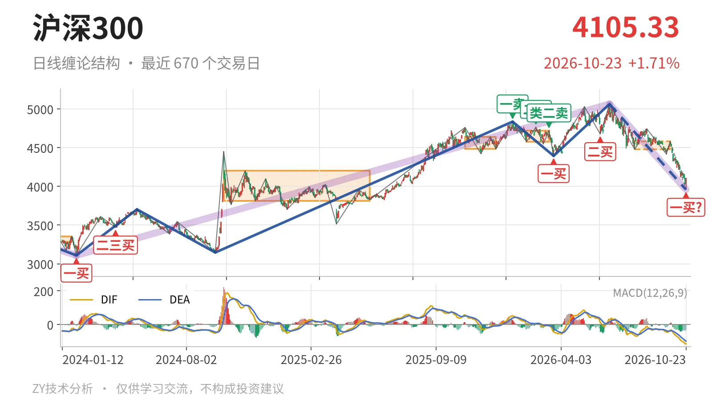
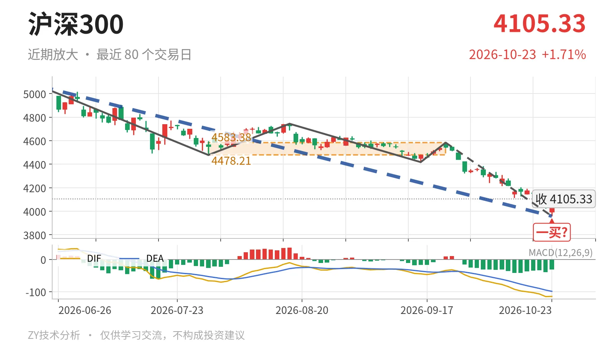

沪深300｜跌破4478点下沿，3958点暂成一买

最近日线中枢 4478.21—4583.38点，收盘位于中枢之下
一句话：跌破4478点中枢下沿，暂定一买，日线下跌笔仍在延续
🧭 走势结构：上涨未坏，日线回调仍在延续
日线层面，当前是2024年2月2日至2026年6月23日上涨走势中的深调。这段上涨从3108.35点拉到5064.27点，涨约63%，还没结束。6月23日以来的日线下跌线段跌约21.8%，当下仍在延续，内含5笔。3月24日至6月23日的上涨线段已经结束，其后回落段还在进行。整体看，这不是单纯的中枢震荡，而是上涨段里的一段快速下杀，但更大级别上涨结构未被破坏。

📍 中枢与位置：跌破最近中枢，进入下方大中枢
最新收盘4105.33点已跌破最近日线笔中枢下沿。该中枢为7月30日至9月22日的4478.21—4583.38点，最新价低于下沿约8.3%。下方2024年10月8日至2025年5月30日大中枢为3812.32—4200.91点，当前价格已进入其内部，并略高于中轴4006.61点。日线笔中枢的中轴从4562.45点降至4530.80点，中枢在下移，也说明回调不是横向整理。
🔍 买卖点：3958点只是暂定一买
10月23日的3958.14点被标为日线笔一买，但所在9月22日至10月23日下跌笔还没有走完，因此这是暂定的一买。若后续跌破3958.14点，这一买点便不成立。上方1月13日一卖4836.95点、2月25日二卖4766.56点、3月17日类二卖4720.86点，一个比一个低；之后3月24日至6月23日上涨线段创出5064.27点新高，使那些卖点只对应日线笔级别。3月24日一买4394.29点和6月8日二买4677.57点也被随后的深调拉回，说明日线笔买卖点对较大结构约束有限。

⚡ 背驰：价格新低，面积不放大
当前下跌笔与6月23日至7月30日那笔同向比较，价格创了新低，但绿柱面积没有同步放大。9月22日至10月23日这笔从4583.38点跌到3958.14点，绿柱面积494；前一笔绿柱面积650。DIF低点-115.1，比前一笔的-66.5更低，说明空头未完全释放。当前DIF -114.6仍处零轴下方，因此底背驰只能按未完成笔观察，不能提前坐实。
🎯 关键位置：反抽看4478点附近
结构上，先看反抽能否回到最近中枢下沿4478点上方。若回不到4478点附近，构成三卖结构，6月23日以来的下跌段还有延续动力；若重新站上4583点并回到中枢内部，这轮下跌更可能只是中枢扩展。下方3958点附近是暂定一买的位置，再失守则看向大中枢下沿3812点附近。反抽未站上4478点之前，偏弱局面不会改变，关键是4478点能否收复。
⚠️ 本文为基于公开行情数据的缠论技术结构记录，由程序自动计算并生成，仅供学习交流，不构成任何投资建议。市场有风险，投资需谨慎。